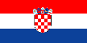
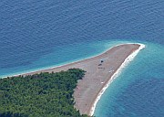
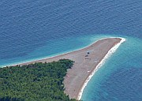

Disclaimer: These pages are not actively maintained, and some of the practical information on the site is out of date. I am working on a new version of the site that will focus more on my photos and memories of travel in Southeast Europe, and less on practical details that too easily become obsolete. In the meantime, please treat the information here with caution.
Croatia :: Introduction
Croatia is the flavour of the month right now. There has been a spate of rather breathless articles in the travel pages about the so-called "best-kept secret of Eastern Europe", apparently written by people who are unaware that Europeans have been visiting the Croatian coast in large numbers for decades. It possesses one of Europe's great coastlines, and an intriguing mixture of architectural and cultural influences. The well-developed tourist industry means that you won't be alone, but also ensures that all of the attractions are easily accessible. No doubt the followers of fashion will move on, but Croatia will always merit a visit.
Where to go: some suggestions

Croatia's Adriatic coast is justly famous. There are beaches, of course, but lots of countries have beaches (and they usually have much more sand than Croatia's). The appeal of this coast is the chance to combine relaxation with visits to a string of fascinating towns, some of them on the coast itself, others on the apparently endless succession of offshore islands. These examples of refined civilisation are all the more striking against the harsh background of the Dinaric Alps running parallel to the coast. I have approached the Adriatic several times through the mountains of Croatia and Montenegro, and the first sight of the turquoise water far below has never failed to take my breath away.
The highlight of the coast is Dubrovnik, one of the great walled cities of Europe and a triumph of 17th century urban planning. I recommend staying at least for long enough to enjoy the views of the city from Mount Srđ and Lokrum Island.
Dubrovnik has a long tradition of welcoming foreign tourists, and an almost equally long tradition of tourists complaining about the other tourists. In the 1930s Rebecca West moaned about hotels "filled with people who either are on their honeymoon or never had one", and was pestered by handkerchief sellers on an excursion to nearby Trebinje. In the late 1960s J.A. Cuddon described it as "one of the most popular tourist processing plants in the Mediterranean".
Heading north from the Dubrovnik, a succession of coastal towns such as Zadar and Rovinj show the influence of the Venetians. In other cities the influences go further back, to the Roman Empire. Pula boasts one of the great surviving amphitheatres, while in Split modern life goes on between the walls of the palace built for the Emperor Diocletian.
Each of Croatia's islands has its distinctive character. You are sure to find one that's perfect for you, whether your tastes run to the Renaissance grandeur of Hvar Town or the seductive charms of doing nothing much at all in off-season Bol.
For a more complete picture of Croatia's diversity, head inland. Some travellers are disappointed by the capital, Zagreb. Perhaps they see it as a Central European city without the monuments of Budapest, or a Croatian city that is less attractive than Dubrovnik. I find that viewed on its own terms it's a very likeable city, its Austrian-influenced solidity contrasting nicely with the Dalmatian coastal towns. Allow time for a day trip to Varaždin, a lovely Baroque town where people still have time to stop and talk with a foreigner.
Croatia's single greatest natural attraction lies between Zagreb and the coast: the unique watery wonderland of Plitvice Lakes National Park. It takes a full day to thoroughly explore the series of lakes and waterfalls wind through a lush forested valley.
Practicalities
Transport
Croatia's rail network is very limited; the most useful domestic route runs from Zagreb to Split. There is no railway to Dubrovnik. Buses are the mainstay of domestic public transport. The system is reliable and buses are usually comfortable. Although any given route may be covered by several different operators, bus stations normally display clear timetables that combine information from all the companies. To place luggage in the hold you have to pay a small extra fee, typically the equivalent of a euro. This is paid for separately from the ticket, so try to have some change handy.
A complex network of ferries carries passengers and cars along the coast and out to the islands. The possibilities for island-hopping are relatively limited - it's often easier to return to the mainland than to take direct ferries between islands. This is particularly true outside the summer season, when schedules are reduced. It's still possible to get to any island big enough to have people living on it, but it's better to plan in advance rather than assume there will be a departure at a time that suits you.
Trains are more useful for international travel, provided you don't mind going through Zagreb - there are trains to all neighbouring countries except Montenegro. Ferries link various Croatian ports to Italy. If you are one of the many people who wishes to visit Croatia and Greece in a single trip, you may be interested in my tips on travelling from Croatia to Greece.
Money
Croatia's currency is the kuna, which can easily be obtained from plentiful ATMs. Some visitors are surprised by day-to-day costs in Croatia, which tend to be higher than in most Balkan countries. Hotels frequently offer poor value, but fortunately the Adriatic coast has a huge network of private rooms. Accommodation costs are highly seasonal; private rooms can be very good value outside the summer months. In November 2004 I paid 10 or 15 euro for rooms in various locations along the coast; one gentleman who rented me a room refused to name a price and told me to pay what I thought was appropriate. I've been told that prices have increased since then. Staying in Zagreb can be relatively expensive as there are not many options in the budget and midrange categories.
Language
Croatian is a Slavic language written in the western alphabet with some accented characters. It's a good idea to learn Croatian pronunciation so that you can say place names intelligibly; pay particular attention to the letter c and its accented variations. Any guidebook or phrasebook should have this information. Otherwise Croatia doesn't require much linguistic preparation. The well-developed tourist industry means that an English speaker is never too far away anywhere on the coast, and most young people speak English (often very well) throughout the country. Older people who rent rooms in their houses are more likely to speak German.


 
